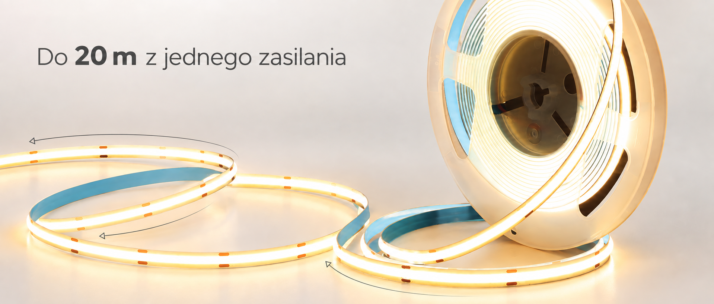
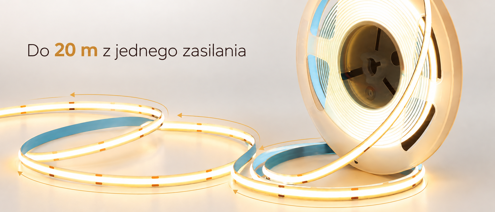
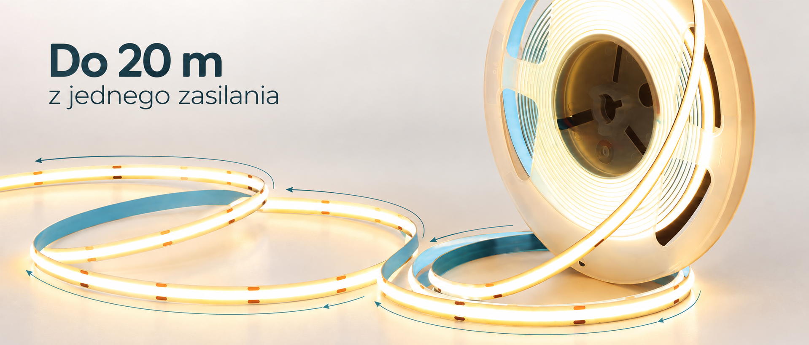
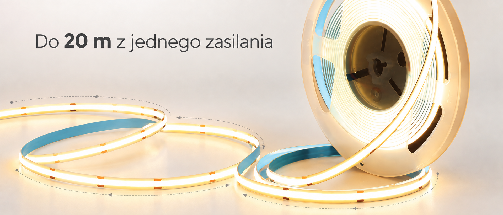

Wariant 01
Grafitowa linia


Cienkie grafitowe strzałki wzdłuż taśmy.
02 / Taśma LED
Do 20 m z jednego zasilania. Cztery propozycje z liniami biegnącymi wzdłuż taśmy.
Wariant 01

Cienkie grafitowe strzałki wzdłuż taśmy.
Wariant 02

Ciepłe, bursztynowe łuki nawiązujące do światła.
Wariant 03

Turkusowe linie i hasło rozłożone na dwa wiersze.
Wariant 04

Delikatna linia przerywana, jak oznaczenie długości.